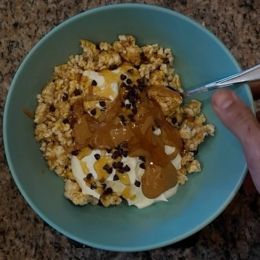

Bol Yogur Griego Dulce
Ingredientes:
- 3 tortas de arroz (caramelizadas de preferencia)
- 400 g Yogur Griego
- 15 g mini Chispas Chocolate
- 20 g Polvo Crema de Cacahuate
- 10 g Stevia
- 30 g Miel
Instrucciones:
- En un bol, romper en trozos las tortas y añadir las chispas de chocolate.
- En un vaso, añadir el polvo de cacahuate y la stevia. Añadir agua lentamente y mezclar hasta que
quede en una consistencia cremosa.
- Echar encima de la mezcla del bol la mezcla de cacahuate y echar miel al gusto.